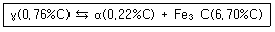
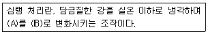
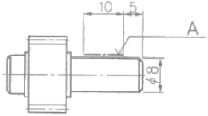
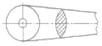
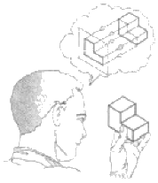
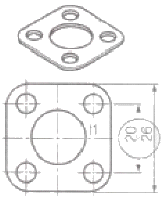

제선기능사 (2013-07-21 기출문제)
1과목: 금속재료일반
1. 순철에서 동소 변태가 일어나는 온도는 약 몇 ℃인가?
- 210℃
- 700℃
- 912℃
- 1600℃
(정답률: 79%)

2. 다음 중 중금속에 해당되는 것은?
- Al
- Mg
- Cu
- Be
(정답률: 66%)
3. pb계 청동 합금으로 주로 항공기, 자동차용의 고속베어링으로 많이 사용되는 것은?
- 켈밋
- 톰백
- Y합금
- 스테인리스
(정답률: 72%)
4. 다음의 철광석 중 자철광을 나타낸 화학식으로 옳은 것은?
- Fe2O3
- Fe3O4
- Fe2CO3
- Fe2O3ㆍ3H2O
(정답률: 83%)
5. 기지 금속 중에 0.01~0.1μm 정도의 산화물 등 미세한 입자를 균일하게 분포시킨 재료로 고온에서 크리프 특성이 우수한 고온 내열 재료는?
- 서멧 재료
- FRM 재료
- 클래드 재료
- TD Ni 재료
(정답률: 59%)
6. 주철의 조직을 C와 Si의 함유량과 조직의 관계로 나타낸 것은?
- 하드필드강
- 마우러조직도
- 불스 아이
- 미하나이트주철
(정답률: 80%)
7. 7-3황동에 Sn을 1% 첨가한 합금으로, 전연성이 좋아 관 또는 판으로 제작하여 증발기, 열교환기 등에 사용되는 합금은?
- 에드미럴티 황동(admiralty brass)
- 네이벌 황동(navel brass)
- 톰백(tombac)
- 망간 황동
(정답률: 82%)
8. Fe-C 평형상태도에서 보기와 같은 반응식은?

- 포정반응
- 편정반응
- 공정반응
- 공석반응
(정답률: 62%)
9. 만능 재료시험기로 인장 시험을 할 경우 값을 구할 수 없는 금속의 기계적 성질은?
- 인장강도
- 항복강도
- 충격값
- 연신율
(정답률: 74%)
10. 다음 중 고 투자율의 자성합금은?
- 화이트 메탈(white metal)
- 바이탈륨(vitallium)
- 하스텔로이(hastelloy)
- 퍼멀로이(pemalloy)
(정답률: 62%)
11. 열처리로에 사용하는 분위기 가스 중 볼활성 가스로만 짝지어진 것은?
- NH3, CO
- He, Ar
- O2. CH4
- N2, CO2
(정답률: 83%)
12. 마그네슘 및 마그네슘 합금의 성질에 대한 설명으로 옳은 것은?
- Mg의 열전도율은 Cu와 Al보다 높다.
- Mg의 전기전도율은 Cu와 Al보다 높다.
- Mg합금보다 Al합금의 비강도가 우수하다.
- Mg는 알칼리에 잘 견디나 산이나 염수에는 침식된다.
(정답률: 85%)
13. 탄소강 재료에 포함된 5대 원소가 아닌 것은?
- C
- P
- Mn
- Al
(정답률: 73%)
14. 보기는 강의 심랭 처리에 대한 설명이다. (A), (B)에 들어갈 용어로 옳은 것은?

- (A) : 잔류 오스테나이트, (B) : 마텐자이트
- (A) : 마텐자이트, (B) : 베이나이트
- (A) : 마텐자이트, (B) : 소르바이트
- (A) : 오스테나이트, (B) : 펄라이트
(정답률: 81%)
15. Al-Mg계 합금에 대한 설명 중 틀린 것은?
- Al-Mg계 합금은 내식성 및 강도가 우수하다.
- Al-Mg계 평형상태도에서는 450℃에서 공정을 만든다.
- Al-Mg계 합금에 Si를 0.3% 이상 첨가하여 연성을 향상시킨다.
- Al에 4~10%Mg까지 함유한 강을 하이드로날륨이라 한다.
(정답률: 64%)
2과목: 금속제도
16. 기계 제작에 필요한 예산을 산출하고, 주문품의 내용을 설명할 때 이용되는 도면은?
- 견적도
- 설명도
- 제작도
- 계획도
(정답률: 79%)
17. 어떤 기어의 피치원 지름이 100mm이고, 잇수가 20개 일 때 모듈은?
- 2.5
- 5
- 50
- 100
(정답률: 93%)
18. 다음 그림에서 A 부분이 지시하는 표시로 옳은 것은?

- 평면의 표시법
- 특정 모양 부분의 표시
- 특수 가공 부분의 표시
- 가공 전과 후의 모양표시
(정답률: 88%)
19. 볼트를 고정하는 방법에 따라 분류할 때, 물체의 한쪽에 암나사를 깍은 다음 나사박기를 하여 죄며 너트를 사용하지 않는 볼트는?
- 관통볼트
- 기초볼트
- 탭볼트
- 스터드 볼트
(정답률: 82%)
20. 그림과 같은 단면도를 무엇이라 하는가?

- 반단면도
- 회전단면도
- 계단단면도
- 은단면도
(정답률: 87%)
21. 도면의 크기에 대한 설명으로 틀린 것은?
- 제도 용지의 세로와 가로의 비는 1:2이다.
- 제도 용지의 크기는 A열 용지 사용이 원칙이다.
- 도면의 크기는 사용하는 제도 용지의 크기로 나타낸다.
- 큰 토면을 접을 때는 앞면에 표제란이 보이도록 A4의 크기로 접는다.
(정답률: 83%)
22. KS의 부문별 기호 중 기본 부문에 해당되는 기호는?
- KS A
- KS B
- KS C
- KS D
(정답률: 93%)
23. 다음 그림에서와 같이 눈→투상면→물체에 대한 투상법으로 옳은 것은?

- 제1각법
- 제2각법
- 제3각법
- 제4각법
(정답률: 88%)
24. 그림에서 치수 20, 26에 치수 보조 기호가 옳은 것은?(오류 신고가 접수된 문제입니다. 반드시 정답과 해설을 확인하시기 바랍니다.)

- S
- □
- t
- ( )
(정답률: 74%)
25. 표면 거칠기의 값을 나타낼 때 10점 평균 거칠기를 나타내는 기호로 옳은 것은?
- Ra
- Rs
- Rz
- Rmax
(정답률: 79%)
26. 정면, 평면, 측면을 하나의 투상도에서 동시에 볼 수 있도록 그린 것으로 직육면체 투상도의 경우 직각으로 만나는 3개의 모서리가 각각 120˚를 이루는 투상법은?
- 등각투상도법
- 사투상도법
- 부등각투상도법
- 정투상도법
(정답률: 85%)
27. 구멍의 최대허용치수 50.025mm, 최소허용치수 50.000mm, 축의 최대허용치수 50. 000mm. 최소허용치수 49.950mm. 일 때 최대 틈새는?
- 0.025mm
- 0.⑤0mm
- 0.075mm
- 0.015mm
(정답률: 82%)
28. 재해 누발자의 유형 중 상황성과 미숙성으로 분류할 때 미숙성 누발자에 해당되는 것은?
- 심신에 근심이 있을 때
- 환경에 익숙하지 못할 때
- 기계설비에 결함이 있을 때
- 환경상 주의력의 집중이 혼란스러울 때
(정답률: 77%)
29. 고로 내의 국부 관통류(channelling)가 발생하였을 때의 조치 방법이 아닌 것은?
- 장입물의 입도를 조정한다.
- 장입물의 분포를 조정한다.
- 장입방법을 바꾸어준다.
- 일시적으로 송풍량을 증가시킨다.
(정답률: 75%)
30. 고로 조업시 장입물이 로 안으로 하강함과 동시에 복잡한 변화를 받는데 그 변화의 일반적인 과정으로 옳은 것은?
- 용해→산화→예열
- 환원→예열→용해
- 예열→산화→용해
- 예열→환원→용해
(정답률: 70%)
3과목: 제선법
31. 최근 관심이 커지고 있는 제선원료로 미분 철광석을 10~30mm로 구상화시켜 소성한 것을 무엇이라 하는가?
- 소결광(Sinter Ore)
- 정립광(Sizing Ore)
- 펠리트(Pellet)
- 단광(Briquetting Ore)
(정답률: 60%)
32. 출선시 용선과 같이 배출되는 슬래그를 분리하는 장치는?
- 스키머(Skimmer)
- 햄머(Hammer)
- 머드 건(Mud gun)
- 무브벌 아무르(Movable armour)
(정답률: 91%)
33. 고로 원료의 균일성과 안정된 품질을 얻기 위해 여러 종류의 원료를 배합하는 것을 무엇이라 하는가?
- 블랜딩(Blending)
- 워싱(Washing)
- 정립(Sizing)
- 선광(Dressing)
(정답률: 83%)
34. 고로의 영역(zone) 중 광석의 환원, 연화 융착이 거의 동시에 진행되는 영역은?
- 적하대
- 괴상대
- 용용대
- 융착대
(정답률: 70%)
35. 재해발생형태별로 분류할 때 물건이 주체가 되어 사람이 맞은 경우의 분류 항목은?
- 협착
- 파열
- 충돌
- 낙하, 비해
(정답률: 85%)
36. 고로의 유효 내용적을 나타낸 것은?
- 노저에서 풍구까지의 용적
- 노저에서 장입 기준선까지의 용적
- 출선구에서 장입 기준선까지의 용적
- 풍구 수준면에서 장입 기준선까지의 용적
(정답률: 68%)
37. 다음 중 고로제선법의 문제점을 보완하여 저렴한 분광석, 분탄을 직접 노에 넣어 용선을 생산하는 차세대 제선법은?
- BF법
- LD법
- 파이넥스법
- 스트립 캐스팅법
(정답률: 85%)
38. 고로에서 슬래그의 성분 중 가장 많은 양을 차지하는 것은?
- CaO
- SIO2
- MgO
- Al2O3
(정답률: 69%)
39. 고로가스(BFG)의 발열량은 약 몇 kcal/m3인가?
- 850
- 1200
- 2500
- 4500
(정답률: 57%)
40. 유동로의 가스흐름을 고르게 하여 장입물을 균일하게 유동화시키기 위하여 고속의 가스 유속이 형성되는 장치는?
- 딥 레그(Dip leg)
- 분산판 노즐(Nozzle)
- 친니스 햇(Chiness hat)
- 가이드 파이프(Guidp pipe)
(정답률: 79%)
41. 고로용 철광석의 입도가 작을 경우, 고로 조업에 미치는 영향과 관련이 없는 것은?
- 통기성이 저하된다.
- 산화성이 저하된다.
- 걸림(Hanging)사고의 원인이 된다.
- 가스분포가 불균일하여 노황을 나쁘게 한다.
(정답률: 53%)
42. 용광로의 고압 조업이 갖는 효과가 아닌 것은?
- 연진이 감소한다.
- 출선량이 증가한다.
- 로정 온도가 올라간다.
- 코크스의 비가 감소한다.
(정답률: 49%)
43. 다음 중 산성 내화물의 주성분으로 옳은 것은?
- SiO2
- MgO
- CaO
- Al2O3
(정답률: 71%)
44. 철광석의 종류와 주성분의 화학식이 틀린 것은?
- 갈철광 : Fe2SO4
- 적철광 : Fe2O3
- 자철광 : Fe3O4
- 능철광 : FeCO3
(정답률: 80%)
45. 고로의 내용적은 4500m3이고, 출선량이 12000t/d이면, 출선능력(출선비)은 얼마인가?
- 2.22t/d/m3
- 2.67t/d/m3
- 3.22t/d/m3
- 3.67t/d/m3
(정답률: 81%)
4과목: 소결법
46. 소결 배합원료를 급광할 때 가장 바람직한 편석은?
- 수직 방향의 점도편석
- 폭 방향의 점도편석
- 길이 방향의 분산편석
- 두께 방향의 분산편석
(정답률: 75%)
47. 배합탄의 관리영역을 탄화도와 점결성 구간으로 나눌 때 탄화도를 표시하는 치수로 옳은 것은?
- 전팽창(TD)
- 휘발분(VM)
- 유동도(MF)
- 조직평형지수(CBI)
(정답률: 68%)
48. 소결 원료 중 조재(造滓)성분에 대한 설명으로 옳은 것은?
- Al2O3는 결정수를 감소시킨다.
- SiO2는 제품의 강도를 감소시킨다.
- MgO의 증가에 따라 생산성을 증가시킨다.
- CaO의 증가에 따라 제품의 강도를 감소시킨다.
(정답률: 56%)
49. 철광석의 피환원성에 대한 설명 중 틀린 것은?
- 산화도가 높은 것이 좋다.
- 기공률이 클수록 환원이 잘된다.
- 다른 환원조건이 같으면 입도가 작을수록 좋다.
- 페이라라이트(fayalite)는 환원성을 좋게 한다.
(정답률: 54%)
50. 코크스(coke)가 고로 내에서의 역할을 설명한 것 중 틀린 것은?
- 철 중에 용해되어 선철을 만든다.
- 철의 용융점을 높이는 역할을 한다.
- 고로 안의 통기성을 좋게 하기 위한 돌로 역할을 한다.
- 일산화탄소를 생성하여 철광석을 간접 환원하는 역할을 한다.
(정답률: 48%)
51. 석탄의 풍화에 대한 설명 중 틀린 것은?
- 온도가 높으면 풍화는 크게 촉진된다.
- 미분은 표면적이 크기 때문에 풍화되기 쉽다.
- 탄화도가 높은 석탄일수록 풍화되기 쉽다.
- 환기가 양호하면 열방산이 많아 좋으나 새로운 공기가 공급되기 때문에 발열하기 쉬워진다.
(정답률: 52%)
52. 소결기의 급광장치 종류가 아닌 것은?
- 호퍼
- 스크린
- 드럼 피더
- 셔틀 컨베이어
(정답률: 76%)
53. 다음 중 소결광 품질향상을 위한 대책에 해당되지 않는 것은?
- 분화 방지
- 사전처리 강화
- 소결 통기성 증대
- 유효 슬래그 감소
(정답률: 62%)
54. 제게르 후의 번호 SK33의 용융 연화점 온도는 몇 ℃인가?
- 1630℃
- 1690℃
- 1730℃
- 1850℃
(정답률: 62%)
55. 폐수처리를 물리적 처리와 생물학적 처리로 나눌 때 물리적 처리에 해당되지 않는 것은?
- 자연침전
- 자연부상
- 입상물여과
- 혐기성소화
(정답률: 67%)
56. 코크스의 연소실 구조에 따른 분류 중 순환식에 해당되는 것은?
- 코퍼스식
- 오토식
- 쿠로다식
- 월푸투식
(정답률: 72%)
57. 고로용 철광석의 구비조건으로 틀린 것은?
- 산화력이 우수해야 한다.
- 적정 입도를 가져야 한다.
- 철 함유량이 많아야 한다.
- 물리성상이 우수해야 한다.
(정답률: 71%)
58. 배소광과 비교한 소결광의 특징이 아닌 것은?
- 충진 밀도가 크다.
- 기공도가 크다.
- 빠른 기체속도에 의해 날아가기 쉽다.
- 분말 형태의 일반 배소광보다 부피가 작다.
(정답률: 65%)
59. 코크스의 생산량을 구하는 식으로 옳은 것은?
- (oven당 석탄의 장입량×코크스 실수율)-압출문수
- oven당 석탄의 장입량-(코크스 실수율×입출문수)
- oven당 석탄의 장입량÷코크스 실수율÷압출문수
- oven당 석탄의 장입량×코크스 실수율×압출문수
(정답률: 77%)
60. 드와이트 로이드식 소결기에 대한 설명으로 틀린 것은?
- 배기 장치의 누풍량이 많다.
- 고로의 자동화가 가능하다.
- 소결이 불량할 때 재점화가 가능하다.
- 연속식이기 때문에 대량생산에 적합하다.
(정답률: 83%)